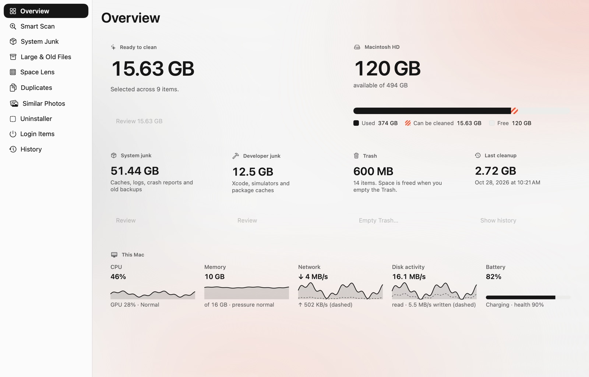
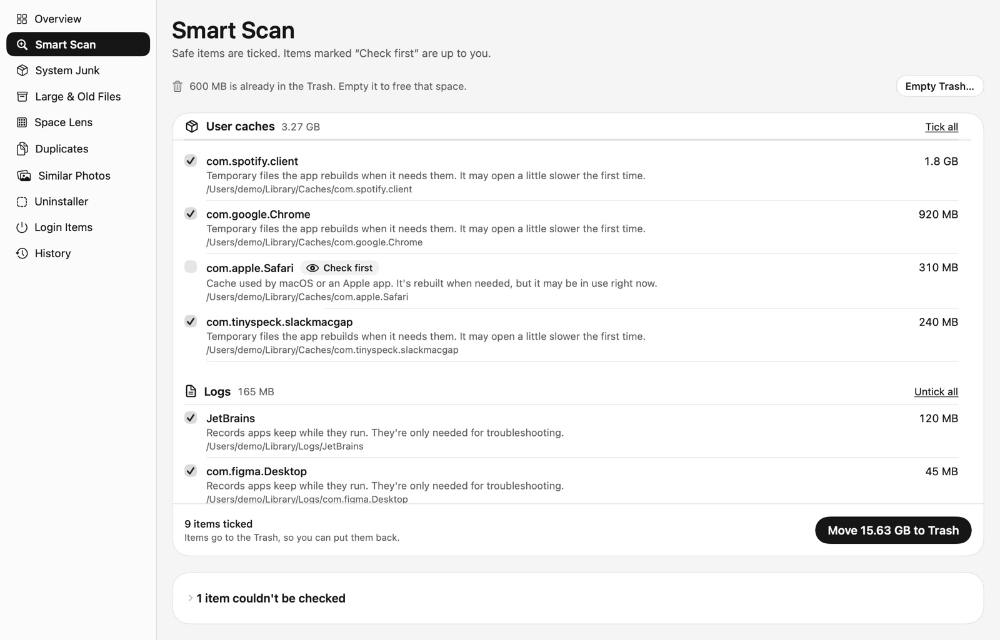
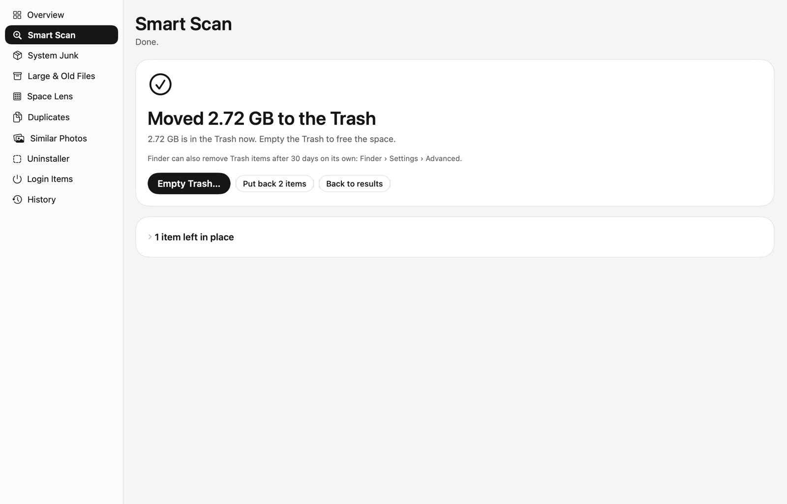

A cleaner Mac, nothing lost.
Whittle finds caches, logs and build files your Mac can let go, and moves only what you tick to the Trash, so you can put anything back.
Free · Version 0.2.7 · 5.3 MB · macOS 26 Tahoe or later
Smart Scan
Safe items are ticked. Items marked “Check first” are up to you.
Moved 15.61 GB to the Trash
It's in the Trash now. Empty the Trash to free the space.
Inside Whittle
Everything on one glass page: what's ready to clean, your disk, the Trash, your last cleanup, and live CPU, memory, network and battery.

How a cleanup goes
First, run Smart Scan.

Then check what's ticked.
Only items Whittle knows are safe come ticked. Anything it isn't sure of says Check first and waits for you. Nothing in Documents, Desktop, Pictures, Movies, Music or iCloud Drive is ever ticked for you.
Finally, move it to the Trash.

What Whittle looks at
Whittle only cleans from a fixed list of places. Everything else waits for you to pick it, one item at a time.
System junk, ticked when safe
- App caches~/Library/Caches
- Logs~/Library/Logs
- Crash reports~/Library/Logs/DiagnosticReports
- Mail downloadsMail’s attachment folder
- Old iPhone and iPad backupsMobileSync/Backup
Developer junk, ticked when safe
- Xcode DerivedDataDeveloper/Xcode/DerivedData
- Xcode archivesDeveloper/Xcode/Archives
- Device supportiOS, watchOS, tvOS, visionOS
- SwiftUI previewsXcode/UserData/Previews
- Simulator cachesCoreSimulator/Caches
- npm and Gradle caches~/.npm · ~/.gradle
Only what you pick
- Large and old filessuggested, never ticked
- Duplicatesone copy always stays
- Similar photosone per group stays
- Apps and their leftoversfound by bundle ID
- Login items~/Library/LaunchAgents
- Empty Trashalways asks first
Questions
Is Whittle free?
Yes. There's no trial, no account and no upgrade to buy.
How do I install it?
Open the DMG and drag Whittle to Applications. The first time you open it, macOS says it can't check it for malicious software: click Done, then open System Settings › Privacy & Security and click Open Anyway next to “Whittle was blocked”. You only do this once per download.
Why does macOS warn me about it?
Whittle isn't notarized by Apple yet, which needs a paid developer account. The app is signed and works the same; macOS just asks you to confirm it once. If it bounces in the Dock and doesn't open, restart your Mac and try again.
Does Whittle delete my files?
No. Everything it cleans goes to the Trash, and History can put it back. The only permanent step is Empty Trash, which has its own button and always asks first, naming the size.
Why does it ask for Full Disk Access?
macOS keeps some folders private, such as other apps' data, Mail and Safari. With Full Disk Access, Whittle can include the caches and logs inside them. Without it, Whittle still works and lists what it couldn't read.
Which Macs does it run on?
Macs with macOS 26 Tahoe or later, Apple silicon and Intel.
Does it update itself?
Yes, from 0.2.7 on: Whittle checks for new versions and offers to install them (Whittle › Check for Updates… checks right away). If you have 0.2.6 or earlier, download 0.2.7 from this page once; your settings, history and Full Disk Access carry over.
Does it collect anything about me?
No. Whittle has no account, no analytics and no tracking. Your scans and history stay on your Mac.
Does it free RAM or scan for viruses?
No. macOS manages memory well on its own, and Whittle isn't an antivirus. It shows memory use in the menu bar so you can see what's going on.
Get Whittle
Open the DMG, drag Whittle to Applications, then allow it once in Privacy & Security.
Whittle 0.2.7
5.3 MB · macOS 26 Tahoe or later
The app speaks
Move 15.63 GB to TrashIt follows your Mac's language.
Download Whittle 0.2.7